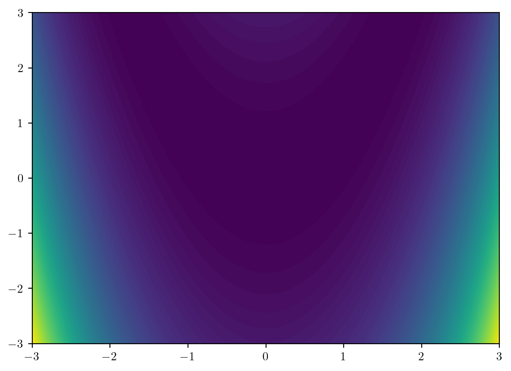
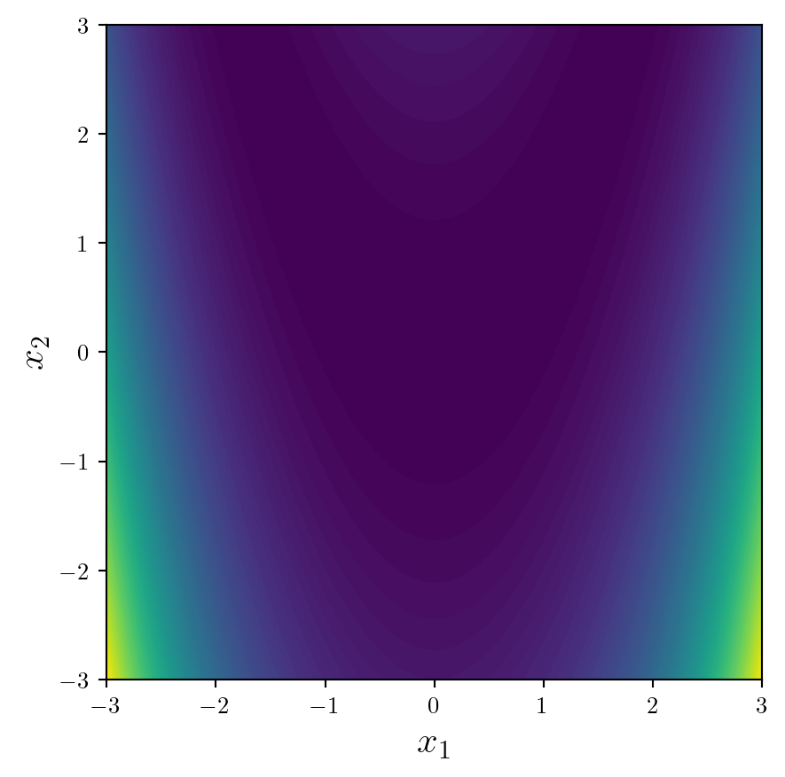
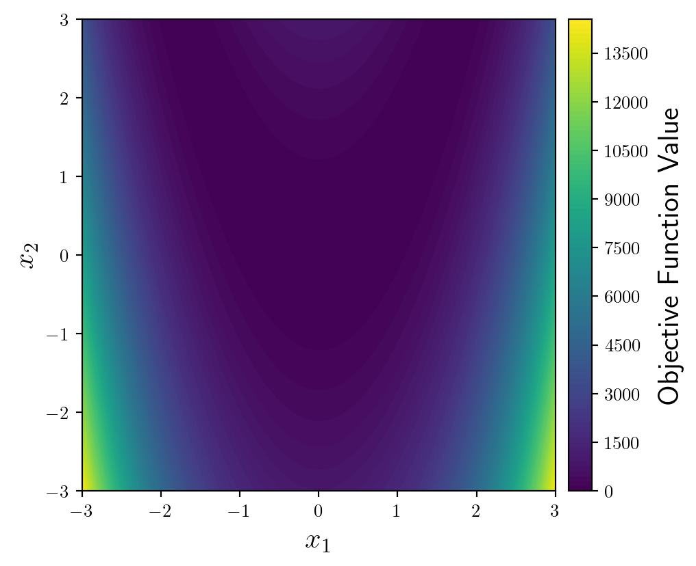
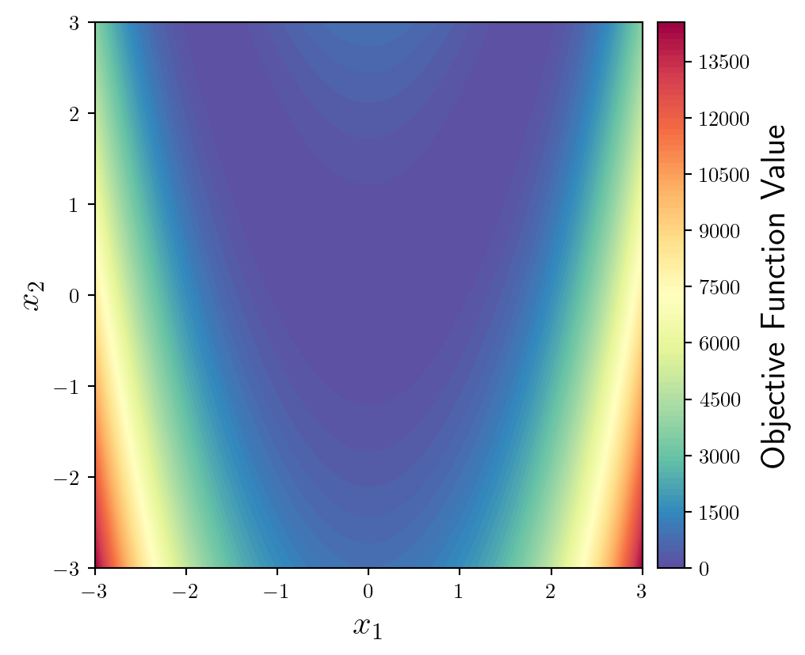
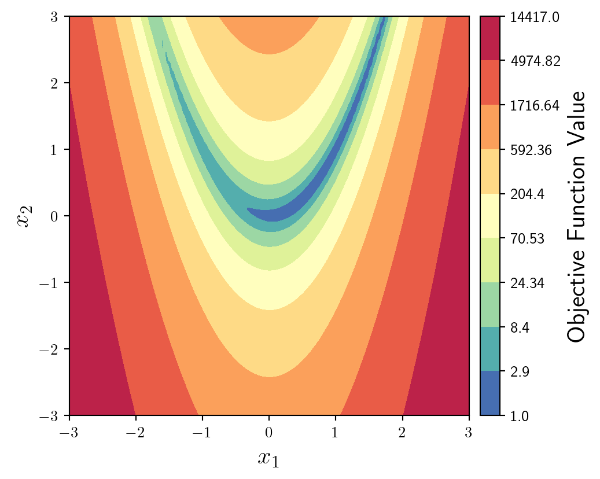
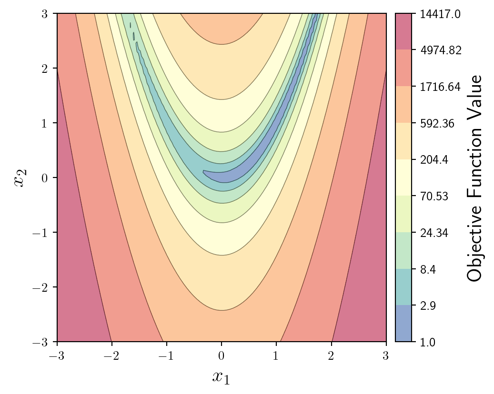
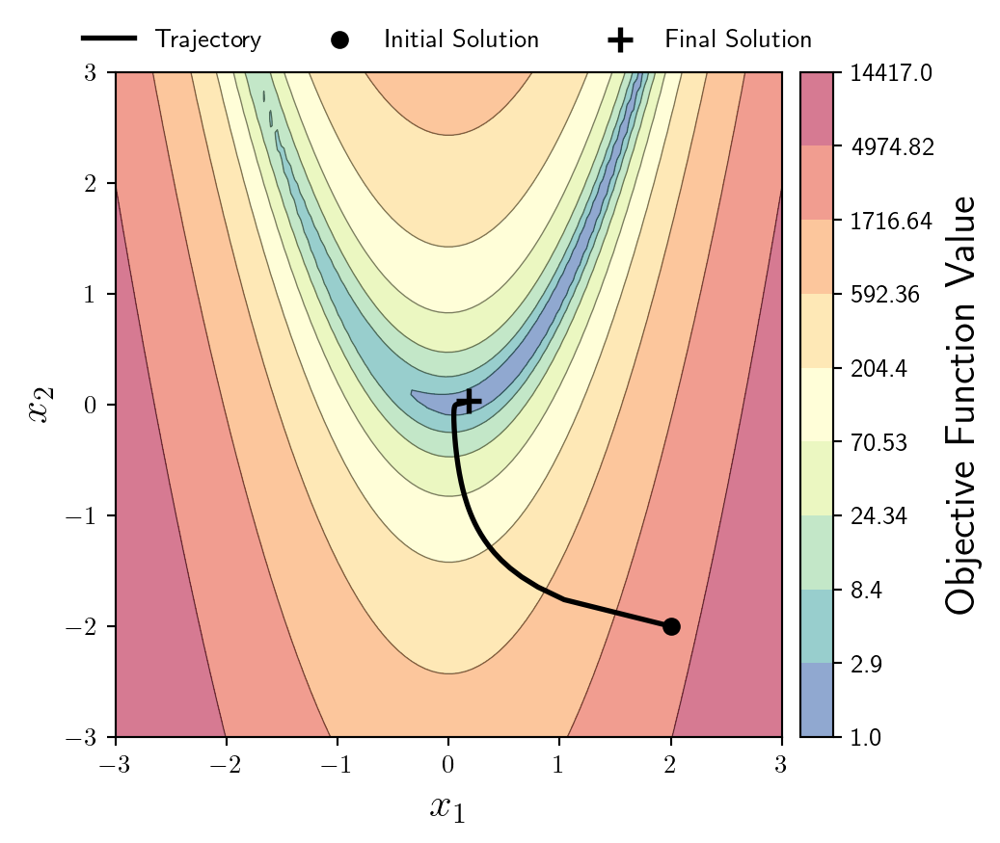

import mlx.core as mx
def f(x1,x2):
return 100*(x2-(x1**2))**2 + (x1-1)**2 +1Here I will outline my personal preferences for best plotting practices for optimisation trajectory plots using Matplotlib. I will be initialising the plot as demonstrated in my previous posts here and here.
I won’t outline a single solution here, but rather a number of options and best practices.
I’ll start by plotting the following objective function:
\[\min_{x_1,x_2} \quad 100(x_2-x_1^2)^2 + (x_1-1)^2 \]
…and in Python, using MLX.
For now we will use the bounds -3 and 3 for both \(x_1\) and \(x_2\). We can apply MLX’s vmap functionality to really quickly evaluate an entire grid of points in parallel.
f_grid = mx.vmap(mx.vmap(f,in_axes=(None,0)),in_axes=(0,None))
n = 100
lb = -3; ub = 3
x1 = mx.array([2.0])
x1 = mx.linspace(start=lb,stop=ub,num=n)
x2 = mx.linspace(start=lb,stop=ub,num=n)
y = f_grid(x1,x2).TJust for peace-of-mind, lets compare the time it takes to evaluate the function on a 100 X 100 grid the standard way:
import timeit
def normal_mat(x1,x2):
y = np.zeros((n,n))
for i in range(n):
for j in range(n):
y[i,j] = f(x1[i],x2[j])
return y.T
numpy_time = timeit.timeit(lambda: normal_mat(np.array(x1),np.array(x2)),number=10)
mlx_time = timeit.timeit(lambda: f_grid(x1,x2),number=10)
print('Numpy (s): ',numpy_time,' ','MLX (s): ',mlx_time,'\n')
print(np.round(numpy_time/mlx_time,4),' times faster.',);Numpy (s): 0.20080224995035678 MLX (s): 0.0006692500319331884
300.0407 times faster.We begin by plotting these evaluations the default way…
X1,X2 = np.meshgrid(x1,x2);
plt.contourf(X1,X2,y,levels=100);
As with 2D scatter plots, we will set up the plot using Matplotlib’s object orientated syntax, set the aspect ratio to be equal using ax.set_aspect('equal'), and add labels of an appropriate size.
fig,ax = plt.subplots(1,1,figsize=(6,6))#|
ax.set_xlabel('$x_1$',fontsize=16)
ax.set_ylabel('$x_2$',fontsize=16)
ax.set_aspect('equal')
Importantly, we need a colorbar in order to interpret values of the function. By doing it in the following way we have more control over its position and options.
from mpl_toolkits.axes_grid1 import make_axes_locatable
fun = ax.contourf(X1,X2,y,levels=100)
divider = make_axes_locatable(ax)
cax = divider.append_axes('right', size='5%', pad=0.1)
fig.colorbar(fun, cax=cax, orientation='vertical').set_label(label='Objective Function Value',size=16)
Since we will be plotting an optimisation trajectory on top of this, we should use a softer, more subtle colourmap. My personal favourite is Spectral (but I’m going to reverse it by appending _r).
fun = ax.contourf(X1,X2,y,levels=100,cmap='Spectral_r')
This function has very steep sides, with a shallow u-shaped valley. It would be better to plot the logarithm of the objective function. We can do this by defining where we want the levels to be using geomspace which creates logarithmically spaced values between the minimum and maximum values of the objective function.
I also change the ticks of the colourbar to match the levels of the contour plot.
levs = np.geomspace(np.min(np.array(y)), np.max(np.array(y)), num=10)
fun = ax.contourf(X1,X2,y,levs,cmap='Spectral_r',locator=ticker.LogLocator())
ticks = np.round(levs,2)
cbar = fig.colorbar(fun, cax=cax, orientation='vertical')
cbar.set_label(label='Objective Function Value',size=16)
cbar.set_ticks(ticks)
cbar.set_ticklabels(ticks)
Considering we will be plotting a trajectory on top of this background it makes sense to make it a little more subtle. We can do this by reducing the alpha value of the colourmap.
To maintain some distinction between level-sets, we can plot some faded, thin contour lines in addition to the filled contour.
fun = ax.contourf(X1,X2,y,levs,cmap='Spectral_r',locator=ticker.LogLocator(),alpha=0.4)
ax.contour(X1,X2,y,levs,colors='k',linewidths=0.5,alpha=0.5)
OK now to solve an optimisation problem, I will write probably the shortest first-order optimisation algorithm possible in MLX.
x = mx.array([2.0,-2.0])
grad = mx.grad(f,argnums=(0,1))
x_store = np.array(x)
for i in range(500):
x = x - 0.0002*mx.array(grad(x[0],x[1]))
x_store = np.vstack((x_store,np.array(x)));Now I will plot the trajectory on top of the objective function, alongside highlighting the initial solution, and the final solution.
I’ll leave these black just to avoid any clashes with the background colourmap.
ax.plot(x_store[:,0],x_store[:,1],lw=2,c='k')
ax.scatter(x_store[0,0],x_store[0,1],s=100,c='k',marker='.',zorder=10,lw=2)
ax.scatter(x_store[-1,0],x_store[-1,1],s=100,c='k',marker='+',zorder=10,lw=2)
I think there’s many more things you could do here, such as highlighting step sizes etc… but I’ll leave it there for now.